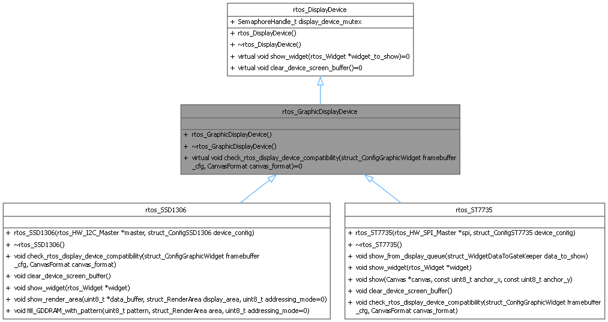
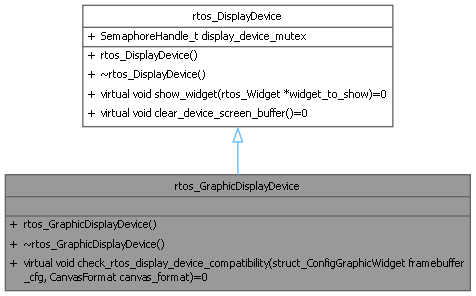

- Generated by
 1.16.1
1.16.1
The RTOS graphic display device is the base class for all graphic display devices that are managed by a dedicated display task in an RTOS environment. More...
#include <display_device.h>


Public Member Functions | |
| virtual void | check_rtos_display_device_compatibility (struct_ConfigGraphicWidget framebuffer_cfg, CanvasFormat canvas_format)=0 |
| Check the compatibility of the framebuffer configuration with the display device physical limitations. | |
| Public Member Functions inherited from rtos_DisplayDevice | |
| virtual void | show_widget (rtos_Widget *widget_to_show)=0 |
| Show the widget on the display device. | |
| virtual void | clear_device_screen_buffer ()=0 |
| Clear the device screen buffer. | |
Additional Inherited Members | |
| Public Attributes inherited from rtos_DisplayDevice | |
| SemaphoreHandle_t | display_device_mutex |
| the mutex to protect the display device access | |
The RTOS graphic display device is the base class for all graphic display devices that are managed by a dedicated display task in an RTOS environment.
|
pure virtual |
Check the compatibility of the framebuffer configuration with the display device physical limitations.
| framebuffer_cfg | the widget configuration data |
| canvas_format | the format of the canvas |
Implemented in rtos_SSD1306, and rtos_ST7735.